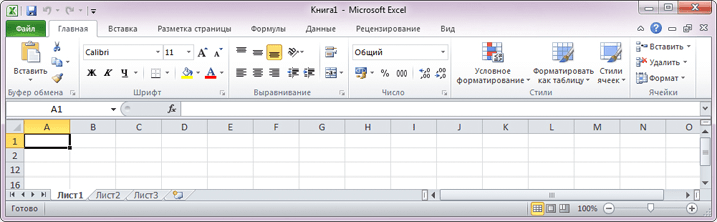

3
Тема 1. Интерфейс MS Excel 2010: поиск и загрузка шаблона книги

Лента — главный элемент пользовательского интерфейса MS Excel 2010.
Она расположена вдоль верхней части окна каждого приложения
(
Лента — главный элемент пользовательского интерфейса MS Excel 2010.
Она расположена вдоль верхней части окна каждого приложения
(вместо традиционных) меню и панелей инструментов). С помощью ленты
можно быстро находить необходимые элементы управления: кнопки,
раскрывающиеся списки, счетчики, флажки, и т. п. Элементы управления
объединены в логические группы, собранные на вкладках.
Если требуется увеличить рабочую область, ленту можно скрыть (свернуть)
Лента — главный элемент пользовательского интерфейса MS Excel 2010.
Она расположена вдоль верхней части окна каждого приложения
Если требуется увеличить рабочую область, ленту можно скрыть (свернуть)
Если требуется увеличить рабочую область, ленту можно скрыть (свернуть)
Лента — главный элемент пользовательского интерфейса MS Excel 2010.
Она расположена вдоль верхней части окна каждого приложения
Наведите курсор мыши
на выделенные области окна,
чтобы ознакомиться
с некоторыми элементами
интерфейса и их назначением
Дизайн пользовательского интерфейса MS Excel 2010 позволяет:
- упростить процедуры поиска и использования всего диапазона возможностей, предоставляемых этим
приложением;
- предотвратить загромождение рабочей области
Основными элементами интерфейса MS Excel 2010 являются лента (с постоянными и
контекстными вкладками, а также с предоставлением MS Office Backstage), панель быстрого доступа, строка
формул, вкладки навигации между листами книги, строка состояния